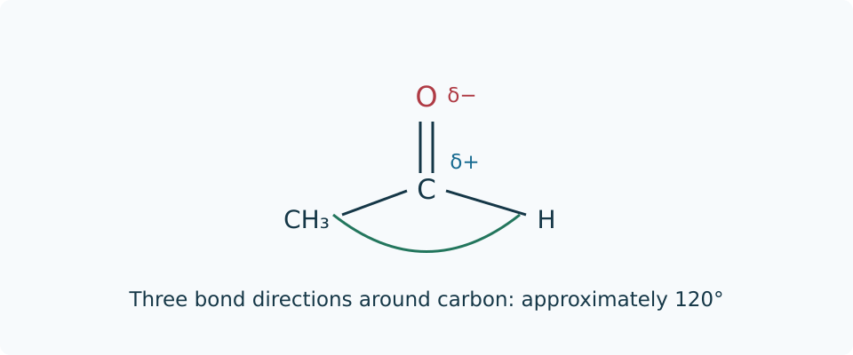
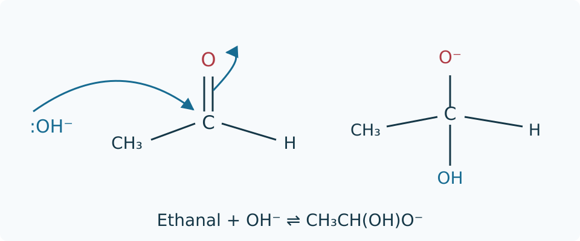
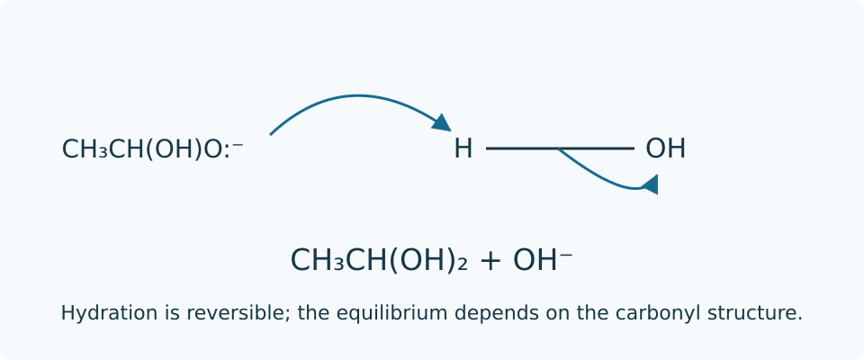
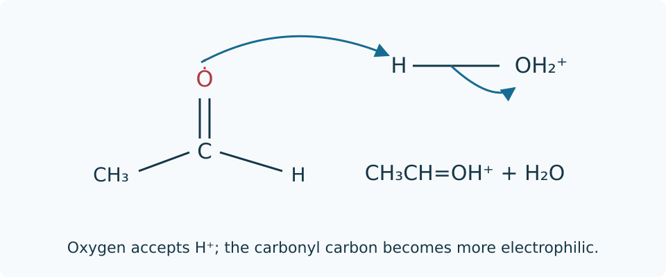
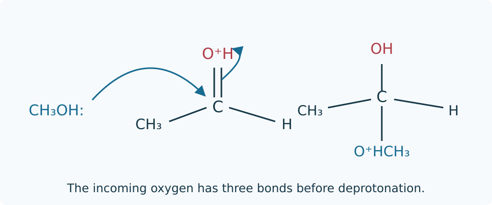
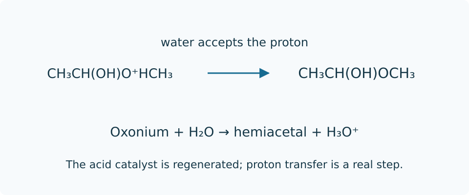
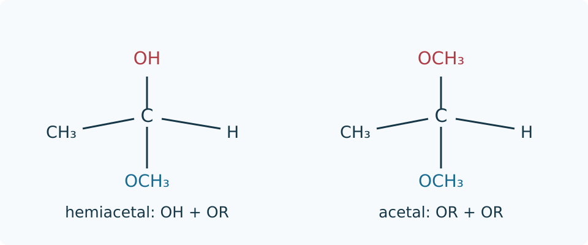
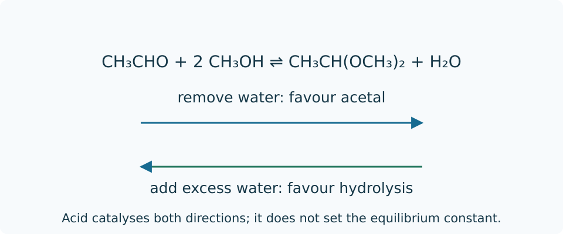
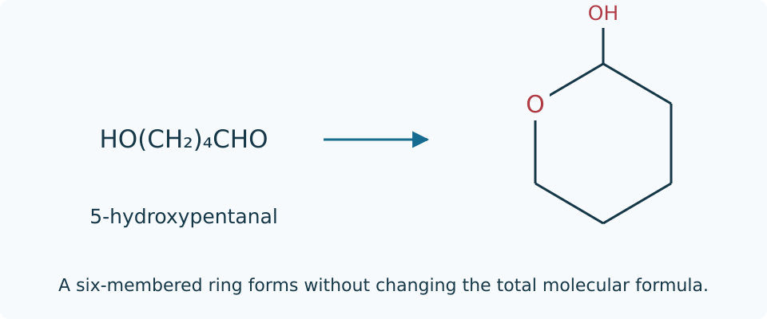
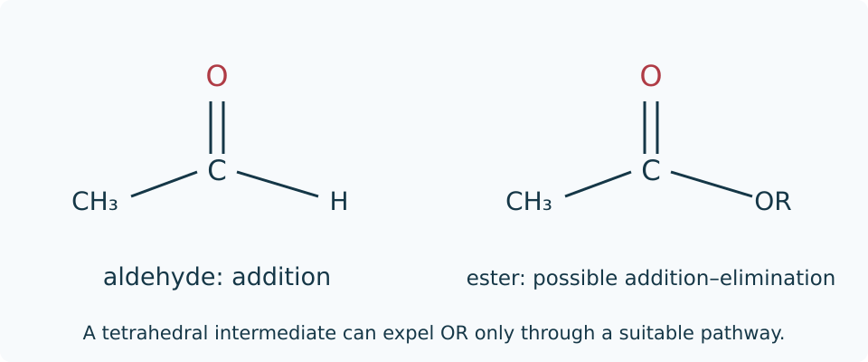

Week 4 · A common pattern behind different products

Ethanal has an oxygen-polarised carbonyl and approximately trigonal planar geometry at its carbonyl carbon.
C=O polarity makes carbon electron-poor. Its π pair can move to oxygen when a nucleophile adds.

Hydroxide adds to ethanal, giving a tetrahedral intermediate with alkoxide oxygen and a newly attached OH.
Two coupled arrows form C–O and move the C=O π pair to oxygen. The total charge remains −1.

Water transfers a proton to the alkoxide, giving a geminal diol and regenerating hydroxide.
The net reaction is carbonyl + water ⇌ hydrate. The base participates in the pathway and is regenerated.

A carbonyl oxygen lone pair accepts a proton from hydronium, producing protonated carbonyl and water.
Protonating oxygen increases carbonyl electrophilicity. Neutral water or alcohol can then be the attacking nucleophile.

Methanol attacks the protonated carbonyl; the pi pair moves to oxygen, and the incoming methanol oxygen becomes oxonium.
The new tetrahedral species has OH and O⁺HCH₃ attached to the same carbon.

Water accepts a proton from the methoxy oxonium group, forming a neutral hemiacetal and hydronium.
A hemiacetal has OH and OR attached to the same carbon. The acid catalyst is regenerated.

A hemiacetal carbon has one OH and one OR group; an acetal carbon has two OR groups.
A second alcohol can ultimately give an acetal under acid catalysis, with water formed. Additional steps are required.

The acetal equilibrium can be shifted toward acetal by removing water or toward hydrolysis using excess water under acid catalysis.
Acid speeds both directions. Changing composition can shift the equilibrium mixture; catalysis alone does not change K.

The terminal alcohol of 5-hydroxypentanal can add to its aldehyde to form a six-membered cyclic hemiacetal.
Intramolecular addition conserves the molecular formula. The ring includes the attacking oxygen and the original carbonyl carbon.

An aldehyde bears H at its carbonyl carbon, while an ester bears OR that can participate in an addition–elimination pathway.
Aldehydes and ketones ordinarily retain their H/carbon substituents during addition. Acyl derivatives introduce leaving-group chemistry next.
Water gives a hydrate; an alcohol can give a hemiacetal; a hydride equivalent gives an alcohol after proton donation.
Locate the new bond in each product. Keep reagent scope and conditions explicit.
The mechanism accounts for the path and intermediates. The equilibrium describes the relative amounts of species under stated conditions.
Drawing an accessible hydrate does not prove it is the major species.
Start with CH₃CHO and CH₃OH. Label the aldehyde oxygen A and alcohol oxygen B.
In the hemiacetal, which is OH and which is OCH₃? What would be wrong with exchanging their atom labels without an extra process?
Complete the practice and worked examples, then the self-check.
Optional textbook support: selected Solomons chapter 16 sections. The reading guide explains the provisional book mapping.